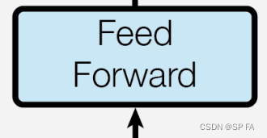

先放出 transformer 的整体结构图，以便复习，接下来就一个模块一个模块的实现它。
1. Embedding
Embedding 部分主要由两部分组成，即 Input Embedding 和 Positional Encoding，位置编码记录了每一个词出现的位置。通过加入位置编码可以提高模型的准确率，因为同一个词出现在不同位置可能代表了不同意思，这直接影响了最终的结果，所以要考虑位置因素。
位置编码公式：
1 2 3 4 5 6 7 8 9 10 11 12 13 14 15 16 17 18 19 20 21 22 23 24 25 26 27 28 29 def get_angles (pos, i, d ): return pos / np.power(10000 , (2 * (i//2 )) / np.float32(d)) def positional_encoding (position, d ): theta = get_angles(np.arange(position)[:, np.newaxis], np.arange(d)[np.newaxis, :], d) theta[:, 0 ::2 ] = np.sin(theta[:, 0 ::2 ]) theta[:, 1 ::2 ] = np.cos(theta[:, 1 ::2 ]) return theta[np.newaxis, ...] class Embedding (nn.Module ): def __init__ (self, cfg ): super (Embedding, self).__init__() self.dim = cfg.hidden_dim self.device = cfg.device self.word_em = nn.Embedding(num_embeddings=cfg.vocab_size, embedding_dim=self.dim).to(self.device) self.position_em = positional_encoding(cfg.max_len, self.dim) def forward (self, input_ids ): seq_length = input_ids.size(1 ) we = self.word_em(input_ids) we *= torch.sqrt(self.dim).to(self.device) pe = self.position_em[:, :seq_length, :] return we + pe
其中 cfg 文件用来存一些超参数，device 是选择使用 CPU / GPU 的设备编号。
2. Masking 为一些标记添加遮罩，这里主要用于一下两种情况：
对填充标记 [PAD] 进行遮罩，确保模型不会将填充作为输入。
前瞻遮挡（look-ahead mask）用于遮挡一个序列中的后续部分，比如说要预测第三个词，那么前面的 [CLS] 标记以及第一第二个词被保留用于预测，而其它位置的词则应该被遮住，不能输入模型。
1 2 3 4 5 6 7 8 9 10 11 12 13 14 15 16 17 18 19 def create_padding_mask (seq ): seq.eq_(0 ) return seq[:, np.newaxis, np.newaxis, :] def create_look_ahead_mask (seq_len ): return torch.triu(torch.ones(seq_len, seq_len), 1 ) def create_masks (src_ids, trg_ids ): en_padding_mask = create_padding_mask(src_ids) de_padding_mask = create_padding_mask(src_ids) look_ahead_mask = create_look_ahead_mask(trg_ids.shape[1 ]) de_trg_padding_mask = create_padding_mask(trg_ids) combined_mask = torch.maximum(de_trg_padding_mask, look_ahead_mask) return en_padding_mask, combined_mask, de_padding_mask
3. Attention 3.1 Scaled Dot-Product Attention (按比缩放的点积注意力)
点积注意力被缩小了深度的平方根倍。这样做是因为对于较大的深度值，点积的大小会增大，从而推动 Softmax 函数往仅有很小的梯度的方向靠拢，这样可能会导致梯度消失。
例如，假设 Q 和 K 的均值为0，方差为1。它们的矩阵乘积将有均值为0，方差为 dk。因此，dk 的平方根被用于缩放（而非其他数值），因为，Q 和 K 的矩阵乘积的均值本应该为 0，方差本应该为1，这样会获得一个更平缓的 Softmax。
在 Softmax 之前要记得加入遮罩，遮罩乘以 -1e9 来添加一个无穷小的数，使得 Softmax 之后的输出在被遮住的部分接近于 0，这样就可以忽略该位置的信息。
3.2 Multi-Head Attention 1 2 3 4 5 6 7 8 9 10 11 12 13 14 15 16 17 18 19 20 21 22 23 24 25 26 27 28 29 30 31 32 33 34 35 36 37 38 39 40 41 class MultiHeadAttention (nn.Module ): def __init__ (self, cfg ): super (MultiHeadAttention, self).__init__() self.n_head = cfg.n_head self.dim = cfg.hidden_dim self.device = cfg.device self.wq = nn.Linear(self.dim, self.dim).to(self.device) self.wk = nn.Linear(self.dim, self.dim).to(self.device) self.wv = nn.Linear(self.dim, self.dim).to(self.device) self.softmax = nn.Softmax(dim=3 ) self.f = nn.Linear(self.dim, self.dim).to(cfg.device) def split (self, tensor ): a, b, c = tensor.size() d = c // self.n_head return tensor.view(a, b, self.n_head, d).permute(0 , 2 , 1 , 3 ) def concat (self, tensor ): a, b, c, d = tensor.size() return tensor.view(a, c, b * d) def attention (self, k, q, v, mask ): _, _, _, d = k.size() kt = torch.transpose(k, 2 , 3 ) s = (q @ kt) / math.sqrt(d) if mask is not None : s += (mask * -1e9 ); s = self.softmax(s) v = s @ v return v def forward (self, v, k, q, mask ): k, q, v = self.wk(v), self.wq(k), self.wv(q) k, q, v = self.split(k), self.split(q), self.split(v) output = self.attention(k, q, v, mask) output = self.concat(output) return self.f(output)
4. Add & Norm
残差连接层有助于避免深度网络中的梯度消失问题。
1 2 3 4 5 6 7 8 9 10 11 class AddNorm (nn.Module ): def __init__ (self, cfg ): super (AddNorm, self).__init__() self.dim = cfg.hidden_dim self.norm = nn.LayerNorm(self.dim).to(cfg.device) self.dropout = nn.Dropout(cfg.drop_out) def forward (self, input , x ): input = self.dropout(input ) return self.norm(input + x)
5. Point wise feed forward network (点式前馈网络) 
1 2 3 4 5 6 7 8 9 10 11 12 13 class FeedForward (nn.Module ): def __init__ (self, cfg ): super (FeedForward, self).__init__() self.dim = cfg.hidden_dim self.f1 = nn.Linear(self.dim, self.dim).to(cfg.device) self.relu = nn.ReLU().to(cfg.device) self.f2 = nn.Linear(self.dim, self.dim).to(cfg.device) def forward (self, x ): x = self.f1(x) x = self.relu(x) return self.f2(x)
6. Encoder and Decoder 6.1 Encoder Layer
1 2 3 4 5 6 7 8 9 10 11 12 13 14 15 16 class EncoderLayer (nn.Module ): def __init__ (self, cfg ): super (Encoder, self).__init__() self.attention = MultiHeadAttention(cfg) self.fforward = FeedForward(cfg) self.addnorm1 = AddNorm(cfg) self.addnorm2 = AddNorm(cfg) def forward (self, x, mask ): attn = self.attention(x, x, x, mask) attn = self.addnorm1(attn, x) ffw = self.fforward(attn) ffw = self.addnorm2(ffw, attn) return ffw
6.2 Encoder 编码器包括
Embedding
N 个编码器层
1 2 3 4 5 6 7 8 9 10 11 12 13 14 15 class Encoder (nn.Module ): def __init__ (self, cfg ): super (Encoder, self).__init__() self.num_layers = cfg.encoder_layer_count self.embedding = Embedding(cfg) self.layers = [EncoderLayer(cfg) for _ in range (self.num_layers)] self.dropout = nn.Dropout(cfg.drop_out) def forward (self, x, mask ): x = self.embedding(x) x = self.dropout(x) for i in range (self.num_layers): x = self.layers[i](x, mask) return x
6.3 Decoder Layer
1 2 3 4 5 6 7 8 9 10 11 12 13 14 15 16 17 18 19 20 21 22 23 class DecoderLayer (nn.Module ): def __init__ (self, cfg ): super (Decoder, self).__init__() self.attention1 = MultiHeadAttention(cfg) self.attention2 = MultiHeadAttention(cfg) self.fforward = FeedForward(cfg) self.addnorm1 = AddNorm(cfg) self.addnorm2 = AddNorm(cfg) self.addnorm3 = AddNorm(cfg) def forward (self, x, encoder_out, look_ahead_mask, padding_mask ): attn1 = self.attention1(x, x, x, look_ahead_mask) ffw1 = self.addnorm1(attn1, x) attn2 = self.attention2(encoder_out, encoder_out, ffw1, padding_mask) ffw2 = self.addnorm2(attn2, ffw1) output = self.fforward(ffw2) output = self.addnorm3(output, ffw2) return output
6.4 Decoder 解码器包括
Embedding
N 个解码器层
1 2 3 4 5 6 7 8 9 10 11 12 13 14 15 16 class Decoder (nn.Module ): def __init__ (self, cfg ): super (Decoder, self).__init__() self.dim = cfg.dim self.num_layers = cfg.decoder_layer_count self.embedding = Embedding(cfg) self.layers = [Decoder(cfg) for _ in range (self.num_layers)] self.dropout = nn.Dropout(cfg.drop_out) def forward (self, x, encode_output, look_ahead_mask, padding_mask ): x = self.embedding(x) x = self.dropout(x) for i in range (self.num_layers): x = self.layers[i](x, encode_output, look_ahead_mask, padding_mask) return x
1 2 3 4 5 6 7 8 9 10 11 class Transformer (nn.Module ): def __init__ (self, cfg ): super (Transformer, self).__init__() self.encoder = Encoder(cfg) self.decoder = Decoder(cfg) self.linear = nn.Linear(cfg.hidden_dim, cfg.vocab_size).to(cfg.device) def forward (self, src_ids, trg_ids, en_padding_mask, look_ahead_mask, de_padding_mask ): en_output = self.encoder(src_ids, en_padding_mask) de_output = self.decoder(trg_ids, en_output, look_ahead_mask, de_padding_mask) return self.linear(de_output)
8. 优化器 与 损失函数 根据论文中的公式，将 Adam 优化器与自定义的学习速率调度程序（scheduler）配合使用。
warmup_steps 为 4000 时的学习率变化如图：
[PAD] 的部分。
1 2 3 4 5 6 7 8 def loss_function (y, pred ): mask = torch.logical_not(torch.eq(y, 0 )) loss = criterion(real, pred) mask = mask.float () loss *= mask return torch.mean(loss)
9. Tokenizer 顺便学一下训练一个自己的 tokenizer
1 2 3 4 5 6 7 8 9 10 11 12 13 14 15 16 17 18 tokenizer = Tokenizer(models.WordPiece(unk_token="[UNK]" )) tokenizer.normalizer = normalizers.Sequence ( [normalizers.NFD(), normalizers.Lowercase()] ) tokenizer.pre_tokenizer = pre_tokenizers.WhitespaceSplit() special_tokens = ["[UNK]" , "[PAD]" , "[CLS]" , "[SEP]" , "[MASK]" ] trainer = trainers.WordPieceTrainer(vocab_size=10000 , special_tokens=special_tokens) tokenizer.train(['text.txt' ], trainer=trainer) tokenizer.save('my_tokenizer.json' ) tokenizer = Tokenizer.from_file("my_tokenizer.json" ) s = "给他们来点小小的蜀国震撼" tokens = tokenizer.encode(s) print (tokens.ids, tokens.tokens)